Concevoir,
c'est choisir
en conscience

En 2024, j'arrive aux UX Days pour la première fois. 1 000 personnes dans la salle - et l'impression étrange d'être la seule à ne connaître personne. Une décharge d'adrénaline plus forte que chez Disneyland, et une question en tête toute la soirée : comment est-ce qu'ils se connaissent tous si bien ?
Ce jour-là, j'ai compris qu'il y avait une communauté à rejoindre. 2026 : invitée cette fois. La même salle - mais différemment. Je suis heureuse d'avoir vécu les deux : l'énergie du bénévolat, et maintenant celle d'être de l'autre côté. Ce ne sont pas les mêmes yeux.
Et dans cette salle, des talks qui m'ont bousculée.
Antoine Pezé qui montre, exemples à l'appui, que la barrière technique n'existe plus - reste la barrière intellectuelle. Anna Cook avec une phrase qui ne m'a plus quittée : si l'IA hérite de la structure sur laquelle elle est entraînée, qu'est-ce qu'on lui donne vraiment ?
C'est ça, le fil rouge de la journée : Concevoir, c'est choisir en conscience.
Pas une posture. Une question à se poser avant chaque décision. Je repars avec ça dans la tête.
Pablo Ruiz-Múzquiz
CEO, PenpotOn a parlé de l'avenir du design face à l'IA : vitesse maximale, hyperpersonnalisation, le consumer qui devient créateur. Et derrière, une vraie question sur l'open source : ce que ça signifiait en 1984 - et ce que ça devrait signifier en 2026. Contrat social, pratiques collaboratives, souveraineté numérique.
Dans un monde où l'IA s'intègre dans chaque outil, la question de qui contrôle quoi est devenue une question de design à part entière.
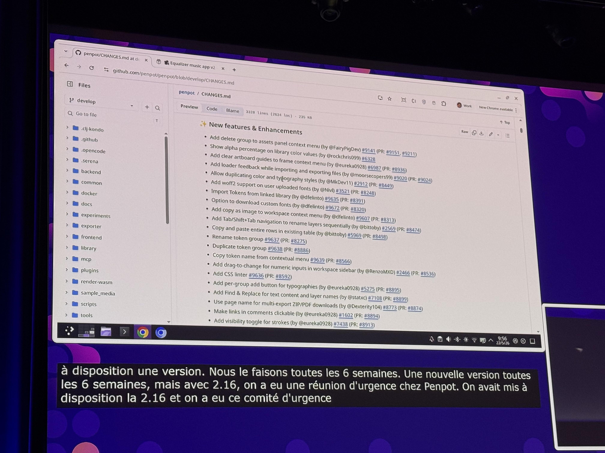
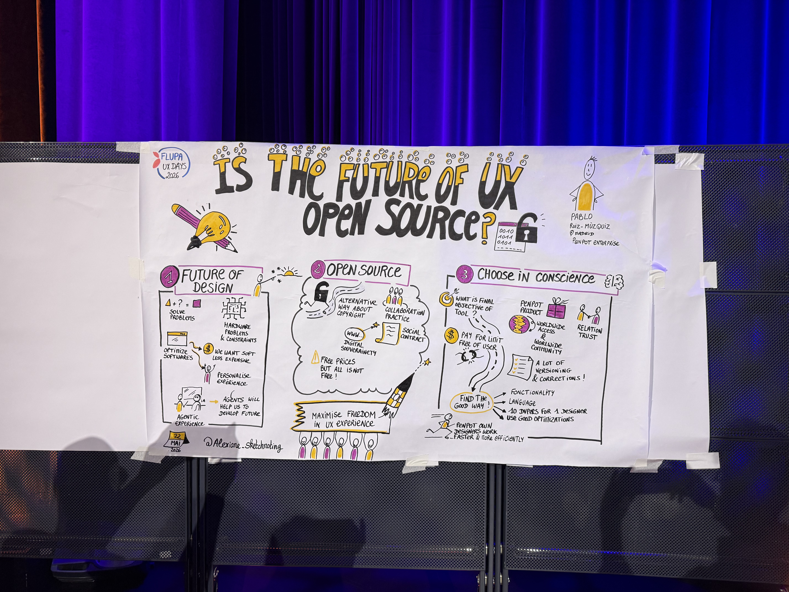
Antoine Pezé
13 ans en UX · 6 ans d'entrepreneuriat · 7 ans de conseil · 8 ans d'enseignement · Développeur par accidentCe qui rend ce talk particulier : Antoine n'est pas développeur. Il est designer - et c'est précisément ça le point. Il a montré des exemples concrets de ce qu'il donne à Claude Code : concevoir l'architecture complète d'un écran, poser les bons cas limites, choisir entre plusieurs options de navigation. En retour, Claude ne livre pas juste du code - il pose des questions, soulève des angles manquants, force à mieux spécifier. Un designer qui pense, pas un dev qui code.
Pour tester les limites, il a donné à Claude Code un brief exprès compliqué : concevoir une fiche immobilière avec des règles visuelles inhabituelles - où c'est le design lui-même qui doit créer la hiérarchie, sans qu'on lui dise ce qui est important. Pas de consigne classique, des éléments qui se chevauchent. Le but : voir jusqu'où la machine comprend vraiment.
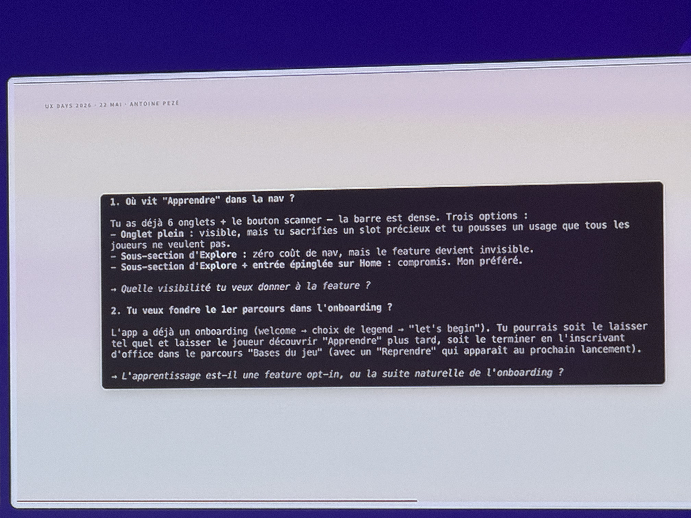
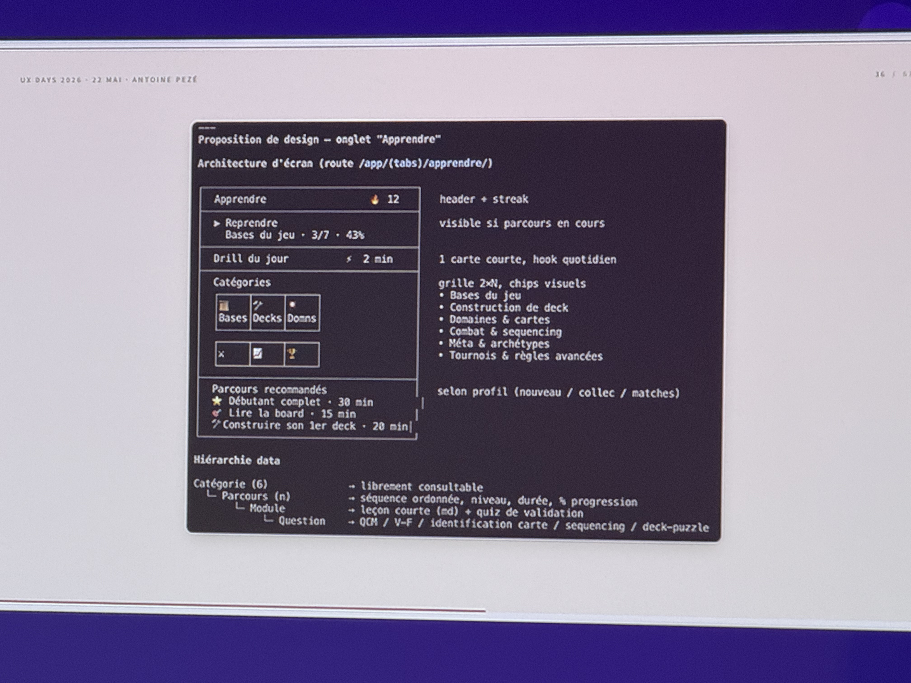
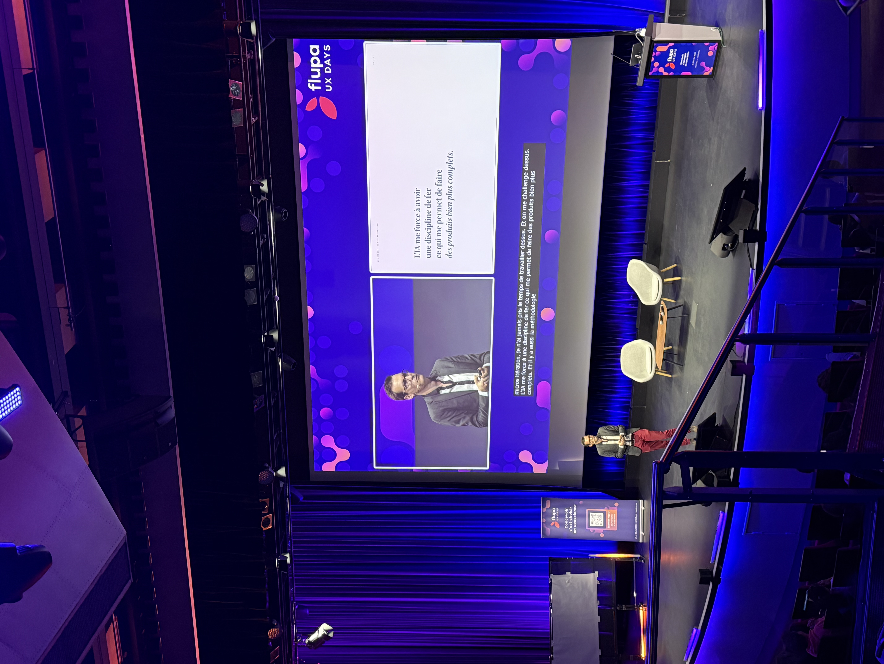
La barrière technique n'existe plus. La barrière intellectuelle, elle, reste entière.
Fatima-Zahra Hamil & Pascal Malotti
Service Designer · Global Retail Strategy Lead, ValtechTalk dense et inconfortable - dans le bon sens. Ils ont décortiqué comment les interfaces captives fonctionnent sur le cerveau : stimulus → libération de dopamine → stimulation régulière qui épuise le système de récompense. Ce n'est pas un accident de design - c'est un circuit. Urgence et FOMO activent l'amygdale ; l'engagement subi finit par être plus fort que l'intention réelle (cortex préfrontal qui cède).
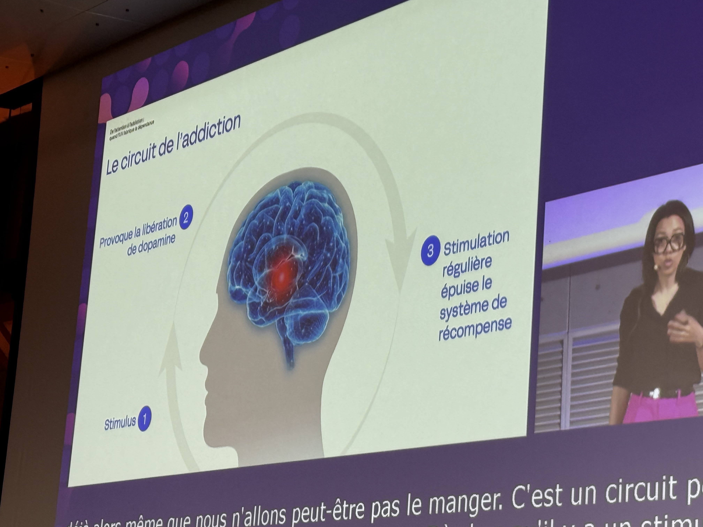
Et une thèse forte : le sujet éthique n'est plus un luxe de grande entreprise - c'est devenu un avantage concurrentiel mesurable. TikTok : -6% de CA mondial potentiel. DSA en application. Australie : interdiction -18 ans. Ce n'est pas une tendance - le cadre réglementaire est déjà là. Les marques qui construisent la confiance surperforment sur la lifetime value : la rétention organique résiste là où la rétention par dépendance s'effondre au premier concurrent.
Le dilemme fondamental : équilibrer croissance business et intégrité de l'utilisateur. Les KPIs dominants mesurent la captivité - le DAU, le temps passé (sans distinguer temps choisi et temps subi), la fréquence de retour (réflexe, pas intention). En face, 5 métriques alternatives pour l'intégrité : DAU Volontaire, Temps Utile Perçu, Utilité des Notifications, Regret Score (satisfaction vs regret post-utilisation), Retour Intentionnel.
Dernier insight, et peut-être le plus vertigineux : la prochaine frontière, quand l'économie de l'addiction perd son substrat. Quand un agent IA navigue à votre place et décide pour vous, le cerveau dopaminergique n'est plus le vecteur. La ressource scarce devient la confiance dans l'agent. Et là, la boucle ironique se referme : les plateformes ont détruit la confiance pour maximiser l'engagement - mais les agents ont besoin de confiance pour fonctionner. L'économie de l'addiction a sapé les fondations de l'économie agentique.
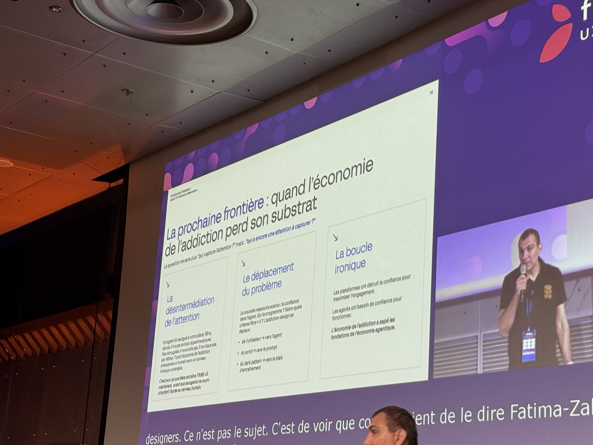
Pour comprendre pourquoi ça fonctionne sur nous, ils ont présenté le modèle S.O.R (Stimulus → Organisme → Réponse) : les stimuli d'interface (réactivité, personnalisation, ancrage de réalité) traversent un hub médiateur - confiance, plaisir émotionnel, excitation - avant de produire un comportement d'achat. Ce modèle montre que le design éthique n'est pas un sacrifice business : c'est construire le bon hub médiateur.
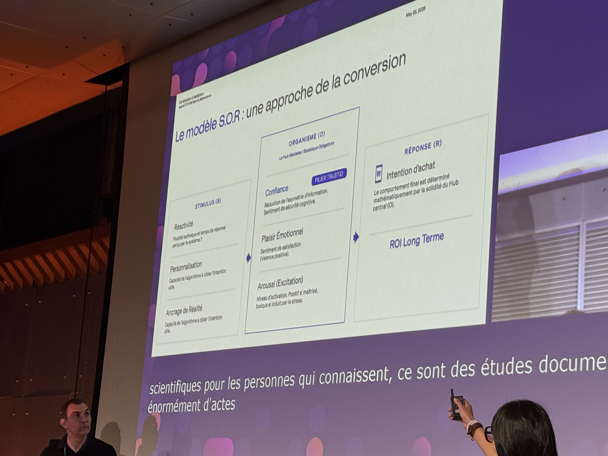
Leur outil pratique : le framework P.A.C.T.E - une grille sur 15 points pour évaluer si un design va vers l'engagement choisi ou l'engagement contraint. Trois axes : Bienveillance (sert-on l'intention utilisateur ?), Transparence (l'utilisateur comprend-il ce qui se joue ?), Maîtrise (le système reste-t-il prévisible ?). Score 0–3 : exploitation. 13–15 : autonomie forte.
Bastien Hughes
Head of Design, Bouygues TelecomL'impact cognitif de l'IA sur le cerveau. L'IA active par défaut le mode économie d'énergie - on délègue, on accepte, on ne choisit plus. La réponse à "idiots ou meilleurs ?" dépend entièrement de la rigueur qu'on met à formuler ses intentions avant de déléguer à la machine.


Cinq pertes à surveiller si on délègue sans conscience : autonomie, compétence, identité, satisfaction, liberté. En face, quatre gains si on l'utilise avec intention - partager son expertise, mieux cibler son travail, sortir des sentiers battus, se fixer des objectifs mesurables. La différence se joue à l'entrée : dans la précision de ce qu'on lui demande.
La preuve par la science : une étude MIT citée par TIME montre que ChatGPT érode les capacités de pensée critique. Les scans EEG révèlent une activité cérébrale significativement réduite chez les utilisateurs d'IA comparés à ceux qui font une recherche classique - ou simplement réfléchissent seuls. Perte de mémoire durable, délégation du raisonnement, atrophie de l'esprit critique.
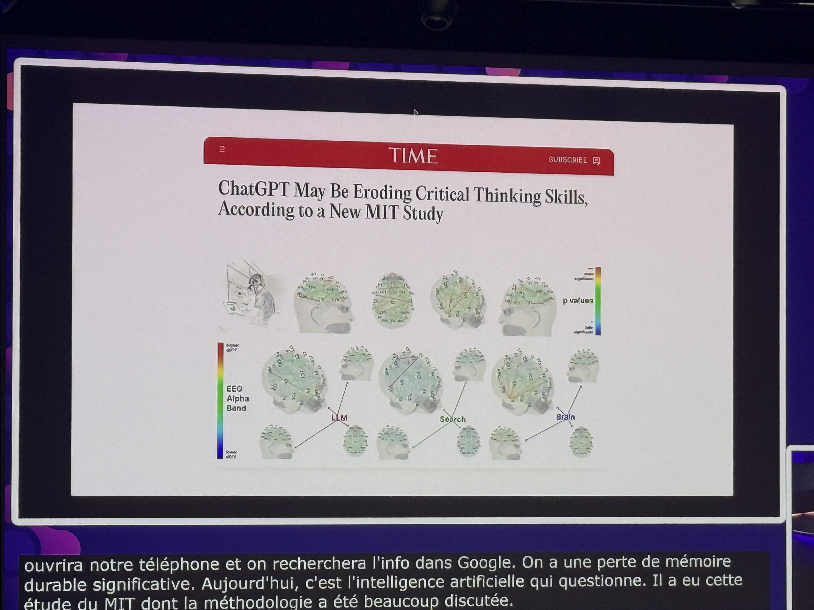
Pourquoi c'est si difficile de résister ? L'IA est cognitivement irrésistible - elle active 8 biais simultanément : minimisation de l'effort (1 requête = 1 réponse), biais d'instantanéité (récompense immédiate), compréhension illusoire (réponses simples), biais d'autorité (ton affirmatif), biais d'automatisation (technologie > humain), biais de confirmation (l'IA valide ce qu'on pensait), biais de sympathie (IA + moi = cœur), biais d'exposition (habitude = confiance élevée).
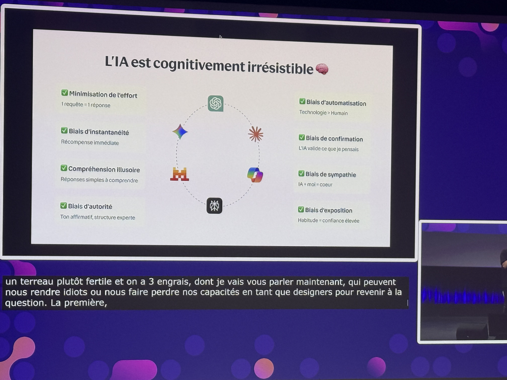
Et un chiffre qui a frappé la salle : 61% des Français ont des difficultés dans leurs démarches administratives en ligne - +22 points entre 2016 et 2024 (Défenseur des Droits, octobre 2025). À une époque où Internet est partout - c'est une défaite du design.
Anna Cook
Senior Accessibility Specialist, MicrosoftL'IA hérite de la structure sur laquelle elle est entraînée. Des fondations web inaccessibles ne se corrigent pas avec l'IA - elles s'amplifient. Anna l'a montré avec un benchmark WCAG des grands modèles : des écarts massifs selon les LLMs, des résultats qui surprennent.
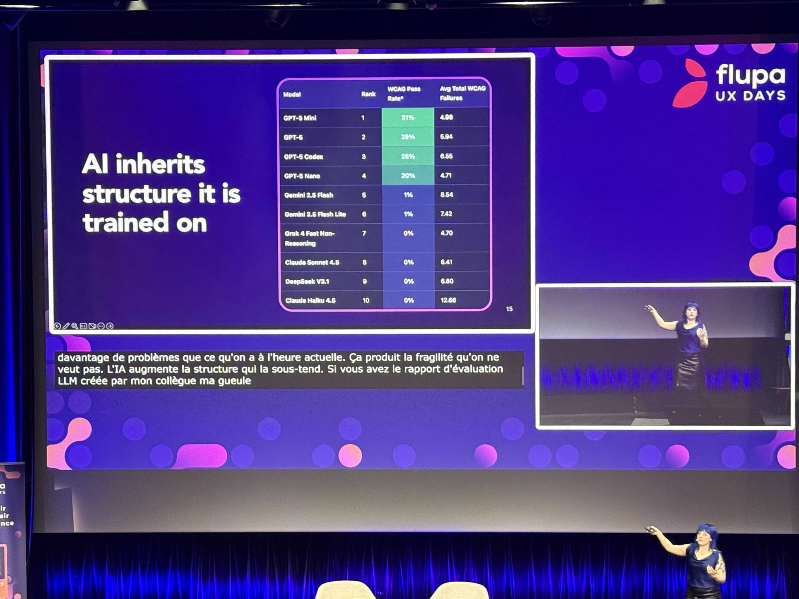
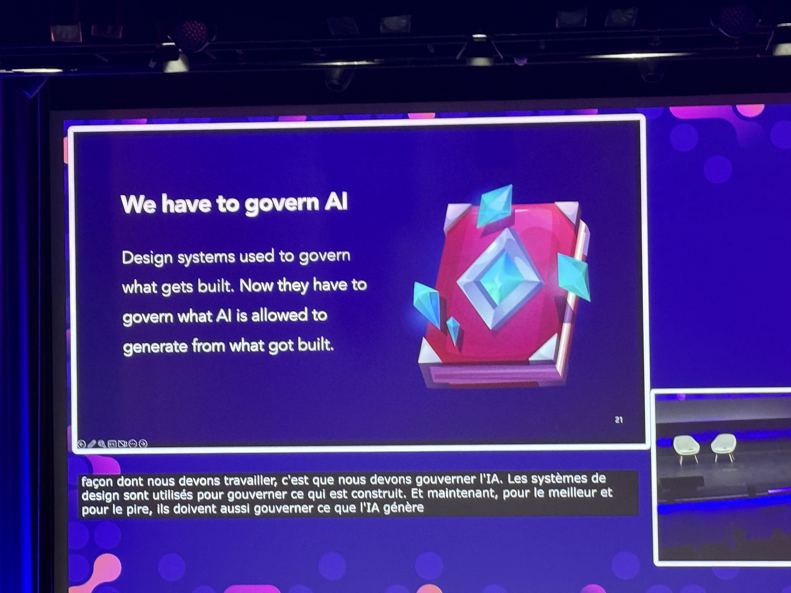
Son benchmark WCAG sur 10 LLMs révèle des écarts vertigineux - et des résultats qui surprennent :
| Modèle | WCAG Pass Rate |
|---|---|
| GPT-5 Mini | 31% |
| GPT-5 | 29% |
| GPT-5 Codex | 26% |
| GPT-5 Nano | 20% |
| Gemini 2.5 Flash | 1% |
| Gemini 2.5 Flash Lite | 1% |
| Grok 4 Fast Non-Reasoning | 0% |
| Claude Sonnet 4.5 | 0% |
| DeepSeek V3.1 | 0% |
| Claude Haiku 4.5 | 0% |
Nos systèmes de design doivent maintenant définir ce que l'IA est autorisée à générer - pas seulement ce que les humains construisent.
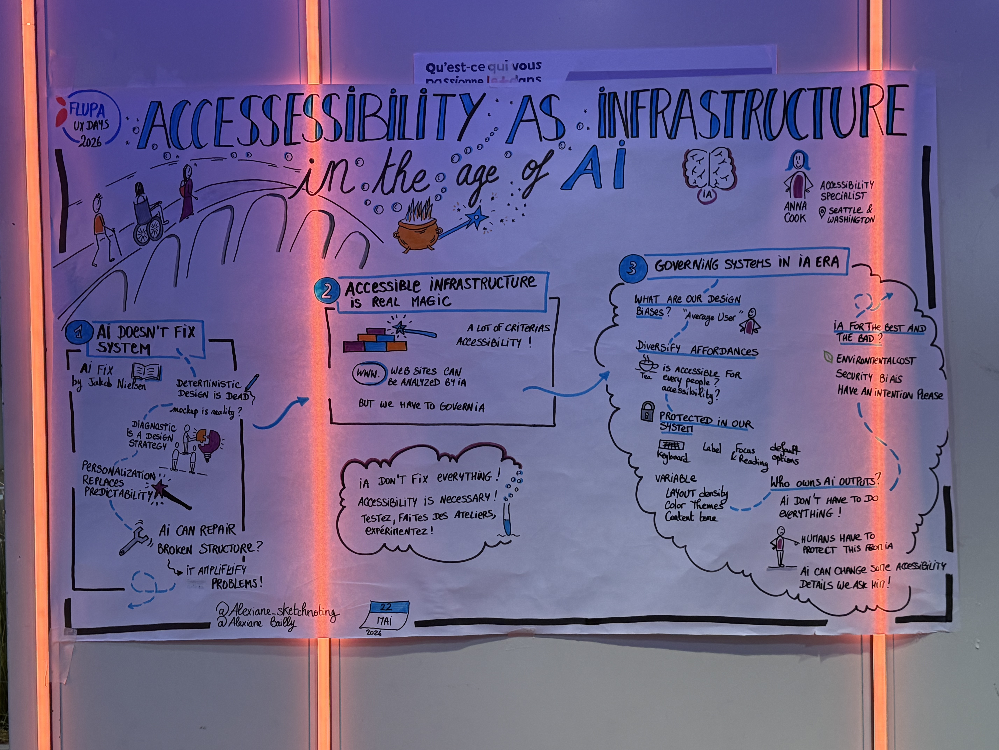
Le talk en trois temps : 1. L'IA ne répare pas les systèmes cassés - elle les amplifie. 2. L'accessibilité est une infrastructure réelle, pas une case à cocher : elle doit être testée, vérifiée, par des experts. 3. Gouverner l'IA dans nos systèmes design, c'est poser la question : qui est l'"utilisateur moyen" qu'on a encodé dans nos données ? Qui est protégé ? Qui ne l'est pas ? Et surtout - qui détient les outputs de l'IA ?
Elie Sloïm
Founder & CEO, OpquastLa qualité comme boussole concrète - pas comme idéal abstrait. Le framework VPTCS (Visibilité, Perception, Technique, Contenus, Services) pour évaluer ce qu'on construit : pas pour être parfait, mais pour avoir une référence commune et décider en connaissance de cause. Ce qui le rend puissant : casser les silos - référencement, ergonomie, sécurité, rédaction, e-commerce - tous travaillent sur les mêmes 5 axes.
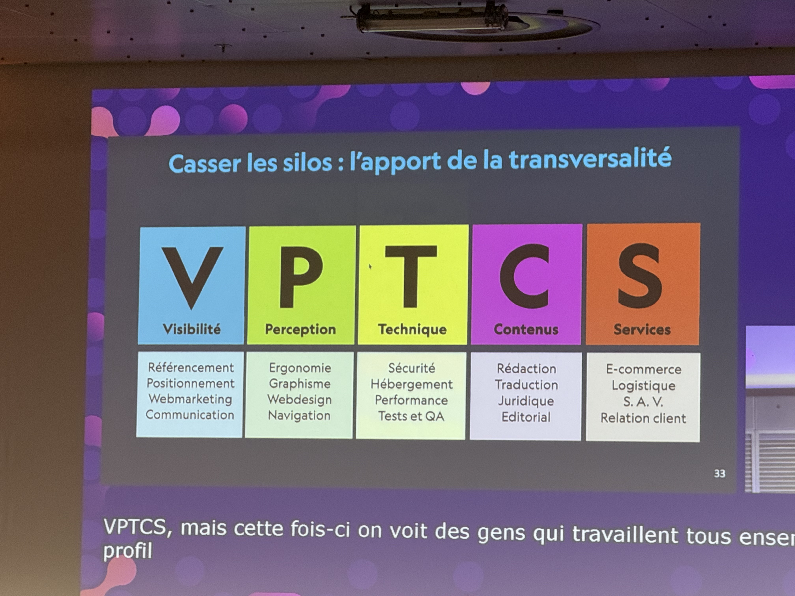
Les sujets de risques à couvrir : accessibilité aux personnes handicapées, protection des données personnelles, sécurité des systèmes, écoconception. Plus souveraineté et usage de l'IA. Des domaines où la qualité n'est pas optionnelle - elle est réglementaire.
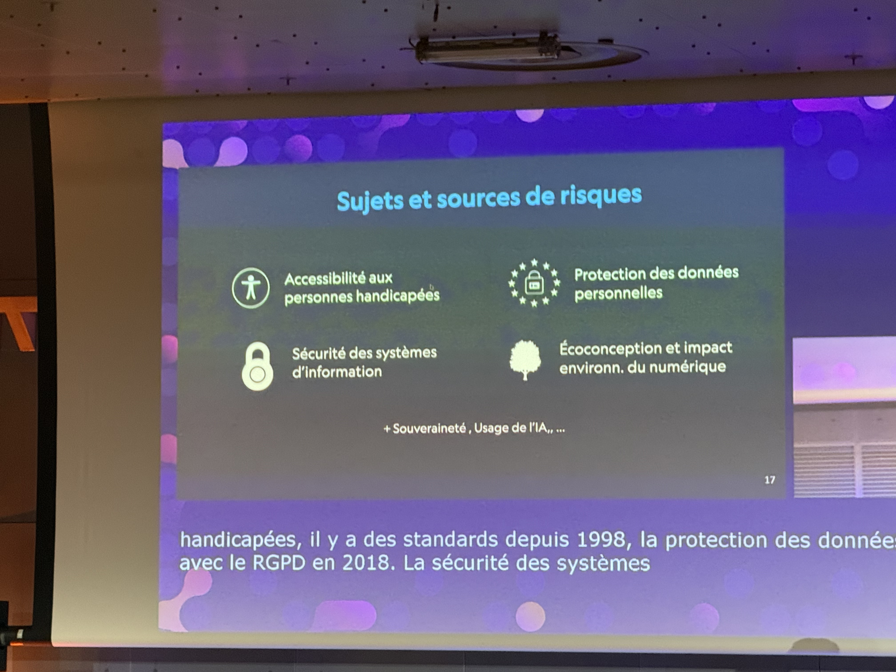
Nadège Bide
Responsable Design Secteur Public, Pollux · DocaposteUn talk qui repose l'acte de design à partir des vulnérabilités - non pas pour les corriger en fin de parcours, mais pour concevoir depuis elles. Quand la contrainte devient le point de départ, les solutions trouvées profitent souvent bien au-delà du public cible initial.
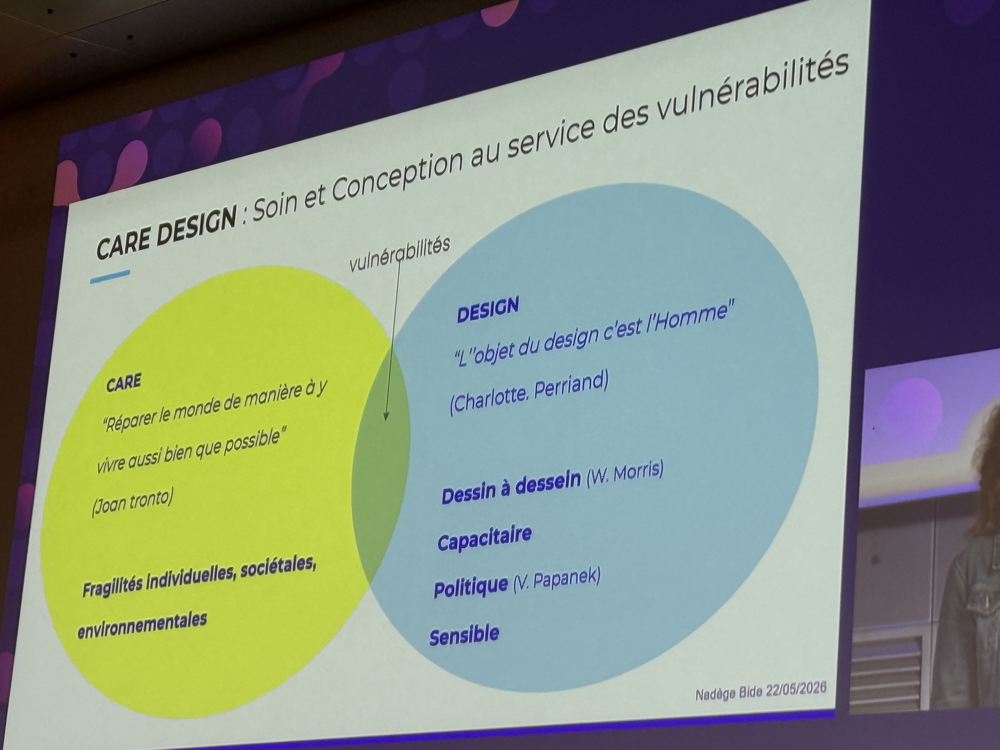
Le Care Design à l'intersection de deux traditions : CARE (Joan Tronto) - "Réparer le monde de manière à y vivre aussi bien que possible", fragilités individuelles, sociétales, environnementales - et DESIGN (Charlotte Perriand) - "L'objet du design c'est l'Homme", capacitaire, politique (V. Papanek), sensible. La vulnérabilité n'est plus l'exception à gérer : c'est le point d'entrée.
Et une observation qui m'a frappée : on est déjà obligés d'être polis avec l'IA - pas par règle écrite, mais quelque chose dans l'interaction nous y pousse. On formule, on adoucit, on dit merci. Ce n'est pas anodin. Concevoir ces interactions, c'est aussi concevoir les codes qu'on va y mettre - et ce que ça dit de nous.
Une référence philosophique forte - Hartmut Rosa sur la résonance :
- Hartmut Rosa, Résonance
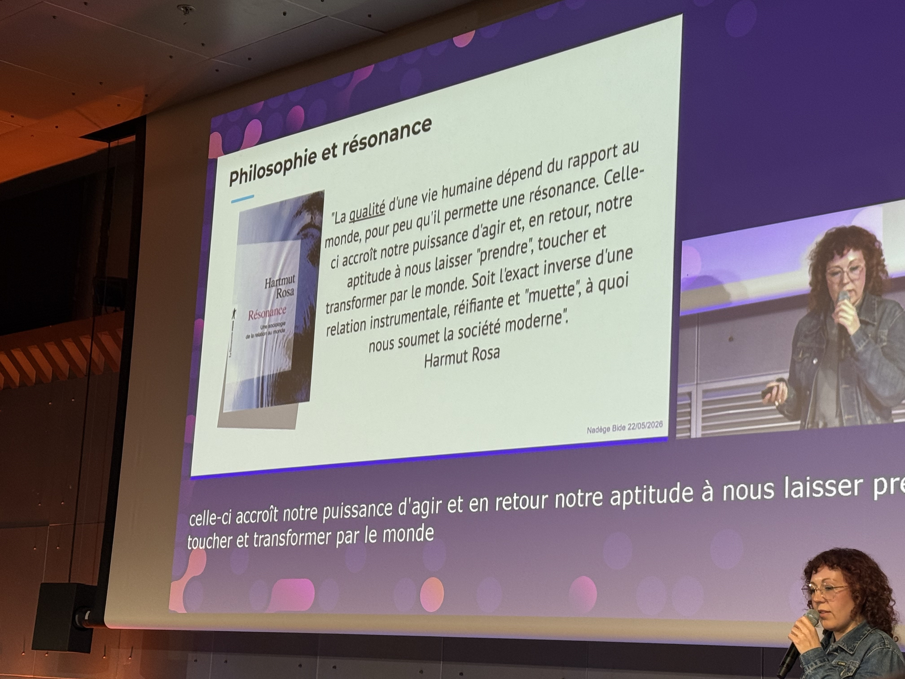
La boussole éthique proposée en 10 axes : Perspective, Silence, Preuve de soin, Climat de soin, Soin aux Morts, Furtivité, Homéostasie, Enquête, Compagnonnage, Demeurer. Référence : Cynthia Fleury & Antoine Fenoglio, Ce qui ne peut être volé - Charte du Verstohlen. Peut-être que c'est ça, la vraie question derrière tous ces talks : qu'est-ce qu'on décide de ne pas déléguer ?
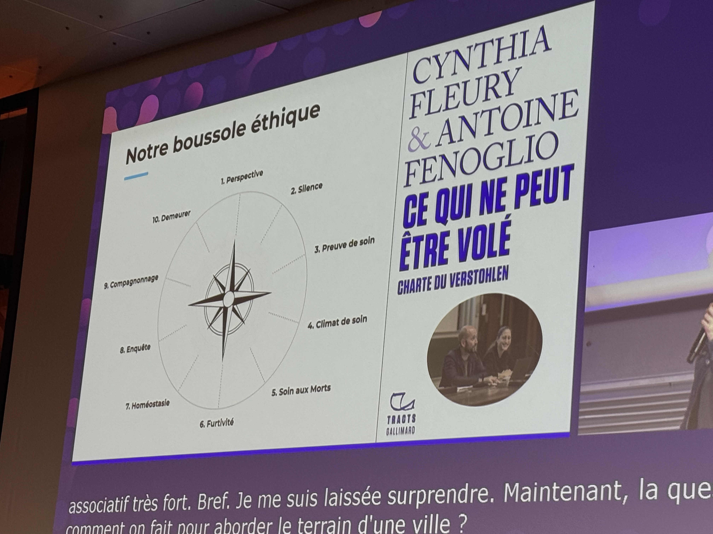
Isabelle Preud'homme & Claire Franqueville
Innovation Director, CNED · UX/UI Designer, CNEDUn REX concret du CNED : comment une communauté continue de bêta-testeurs permet d'arbitrer entre contraintes réglementaires, enjeux business et besoins réels des utilisateurs. Pas une consultation ponctuelle - une boucle de feedback permanente intégrée dans le processus de décision.
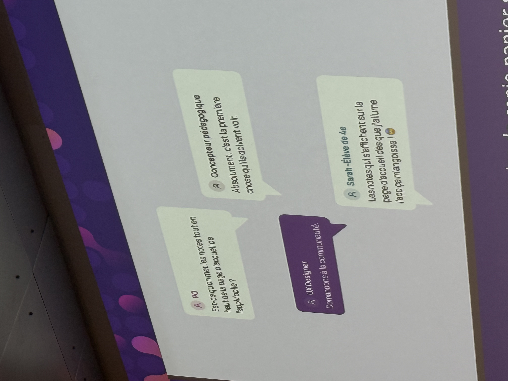
Le cas qui illustre tout : le PO veut afficher les notes en haut de la page d'accueil de l'app mobile. Le concepteur pédagogique valide. Le designer dit : demandons à la communauté. Réponse de Sarah, élève de 4e : «Les notes qui s'affichent dès que j'allume l'app, ça m'angoisse.» Sans la communauté, cette voix n'aurait jamais existé dans la pièce.
Le rôle du designer : être celui qui pose la question avant que la décision soit prise. Sarah n'était pas dans la réunion - mais c'est elle qui avait la réponse.
La valeur du designer se déplace vers la précision de la pensée. Formuler clairement ce qu'on veut devient la compétence clé.
Des fondations solides + IA = effet de levier. Des fondations fragiles + IA = amplification des problèmes.
La vitesse est le défaut. Choisir en conscience, c'est aller à contre-courant - et c'est là qu'est la valeur.
Qui décide, qui répond ? À mesure que l'IA entre dans nos process, cette question va devenir incontournable.
Les marques qui construisent la confiance fidélisent autrement. La rétention organique résiste là où la dépendance s'effondre au premier concurrent.